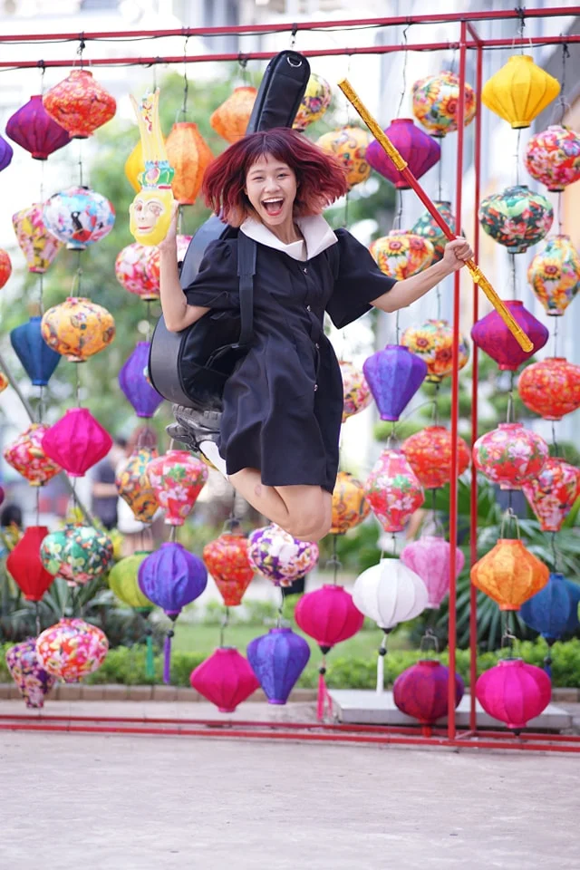

Sinh viên FPoly Hà Nội háo hức tham gia trò chơi dân gian tại khu check-in “Little Hoi An”
Nhân dịp lễ trung thu, phòng CTSV Cao đẳng FPT Polytechnic Hà Nội đã phối hợp với CLB Media và CLB Design tổ chức cuộc thi ảnh “Little Hoi An”, cùng với đó là các trò chơi dân gian thú vị, thu hút nhiều sinh viên tham gia.
Trong tuần lễ trung thu (04/09 – 10/09), khu vực sân cầu lông Cao đẳng FPT Polytechnic Hà Nội đã khoác lên mình một màu áo với với nhiều sắc màu rực rỡ, ấn tượng từ những chiếc đèn lồng phố Hội An, thu hút đông đảo sự quan tâm từ các bạn sinh viên.

Đặc biệt, không chỉ đơn thuần là khu check-in, “Hội An thu nhỏ” còn vô cùng ấn tượng khi có các hoạt động trò chơi dân gian như: ô ăn quan, nhảy ba bố, cá ngựa, cờ vua,… do chính các bạn sinh viên trong CLB Media và CLB Design của nhà trường tổ chức.
Sinh viên tham gia các chơi trò “Ô ăn quan”
Lần đầu tiên, sinh viên FPT Polytechnic Hà Nội được trải nghiệm một không gian hoàn toàn mới lạ. Không có những trò chơi thời hiện đại, không có điện thoại smartphone, “Little Hoi An” vẫn thành công thu hút sinh viên bởi những trò chơi dân gian quen thuộc, gợi nhớ về một thời đã qua. “Sân chơi Hội An” còn là cơ hội giúp các bạn sinh viên giao lưu, làm quen với những người bạn mới và cũng là tập trung, giao lưu của các bạn sinh viên có niềm đam mê với “Nhiếp ảnh”.
Sinh viên tập trung chơi các trò chơi dân gian tại khu vực “Little Hoi An”
Mặc dù chỉ là một không gian nhỏ, nhưng “Little Hoi An” đã giúp các bạn sinh viên có những bức ảnh chân dung ấn tượng và khoảng thời gian ý nghĩa. Thành Kiên – chủ nhiệm CLB Design chia sẻ: “Rất may mắn vì em và các bạn trong CLB được làm BTC tại sân chơi “Little Hoi An”. Bọn em không chỉ được luyện “cơ tay” khi được cầm máy ảnh và “nháy” liên tục, mà còn có cơ hội được trải nghiệm, giao lưu với rất nhiều bạn mới. Hy vọng rằng, nhà trường sẽ có thêm thật nhiều sân chơi như này để CLB kỹ năng như chúng em có môi trường luyện tập, giao lưu và học hỏi”.
Bạn Thanh Nga, phó chủ nhiệm CLB Media chia sẻ: “Qua hoạt động này, CLB em cũng đã “chiêu mộ” được rất nhiều thành viên mới quan tâm và nộp đơn tham gia CLB. Có những lúc cãi vã khi lên ý tưởng, cũng có những lúc cảm thấy thật khó để thực thi, nhưng cuối cùng, chúng em cũng đã thành công thu hút các bạn sinh viên quan tâm và đến tham gia vào sân chơi. Ngoài ra, “Little Hoi An” cũng rất đẹp và giúp cho bọn em chụp được rất nhiều những bức ảnh ấn tượng.”
Không chỉ là đơn vị BTC, CLB Media cũng đã nhanh chóng ghi lại những thước phim ấn tượng tại “Phố Hội của sinh viên FPT Polytechnic Hà Nội. Hãy cùng “check” những khoảnh khắc ấn tượng qua video highlight do chính CLB Media quay và dựng nhé!
Với những hoạt động trên, CLB Media và CLB Design đã gây ấn tượng mạnh mẽ với các bạn sinh viên đang học tập tại FPT Polytechnic Hà Nội. Trong thời gian tới, mong rằng, sẽ không chỉ có “Little Hoi An” mà sẽ có thật nhiều các sân chơi giúp các bạn sinh viên tham gia và trải nghiệm hơn!